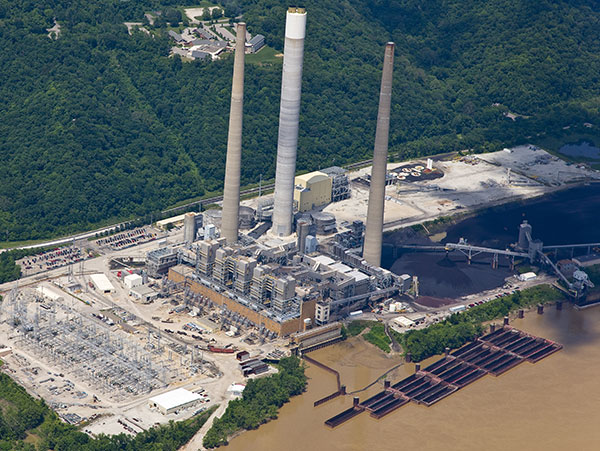
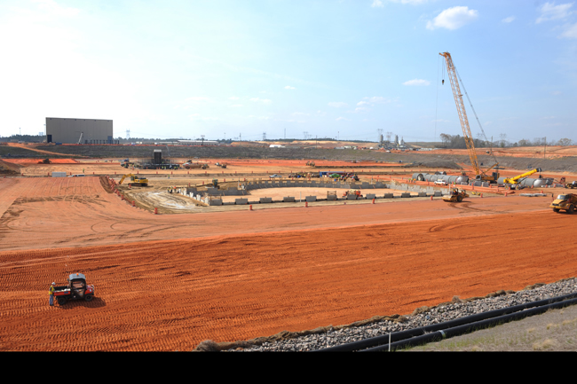
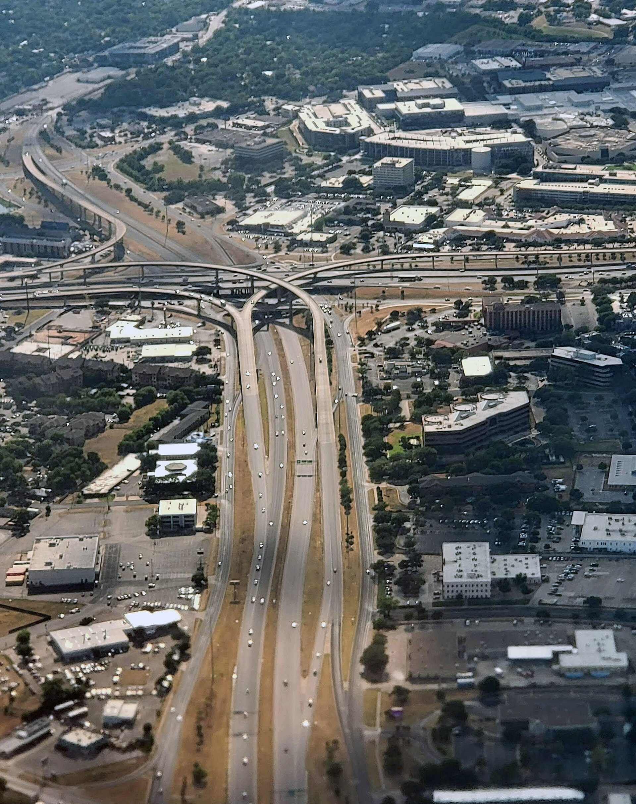

Featured field work
Three projects. Three operating environments.

01 / Field construction
Clifty Creek Landfill Construction & Pond Enclosures
[REVIEW] Add Jorge's role, scope, project constraints, and measurable outcome.
View case study ↗Photo: Wolverine Power Cooperative

02 / Environmental remediation
VG CP2 Soil Remediation
[REVIEW] Confirm project naming and add Jorge's responsibility, decisions, and results.
View case study ↗Photo: Georgia Power construction archive

03 / Transportation infrastructure
I-35 · Georgetown, Texas
[REVIEW] Add Jorge's role, project scope, timeline, and measurable results.
View case study ↗Representative I-35 aerial: Murphpics, CC BY-SA 4.0
0103